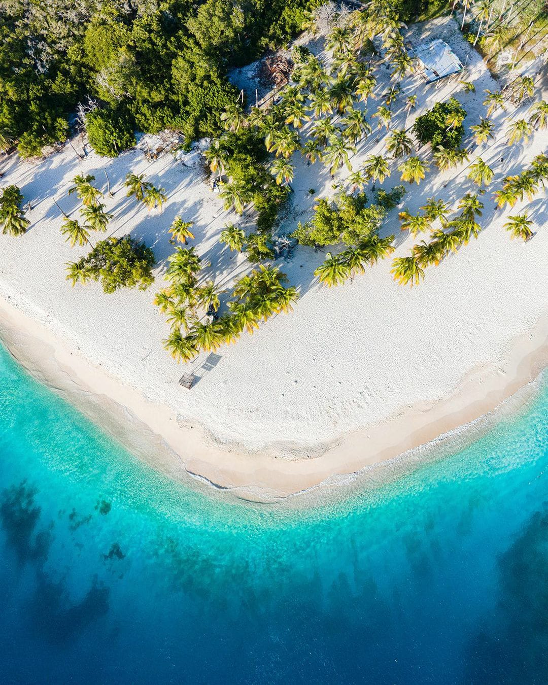
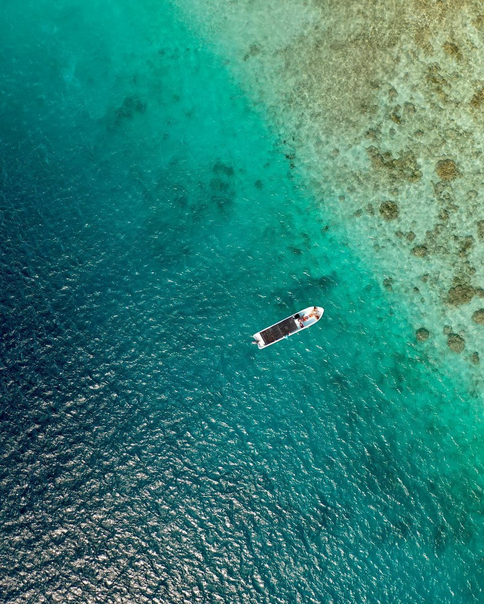
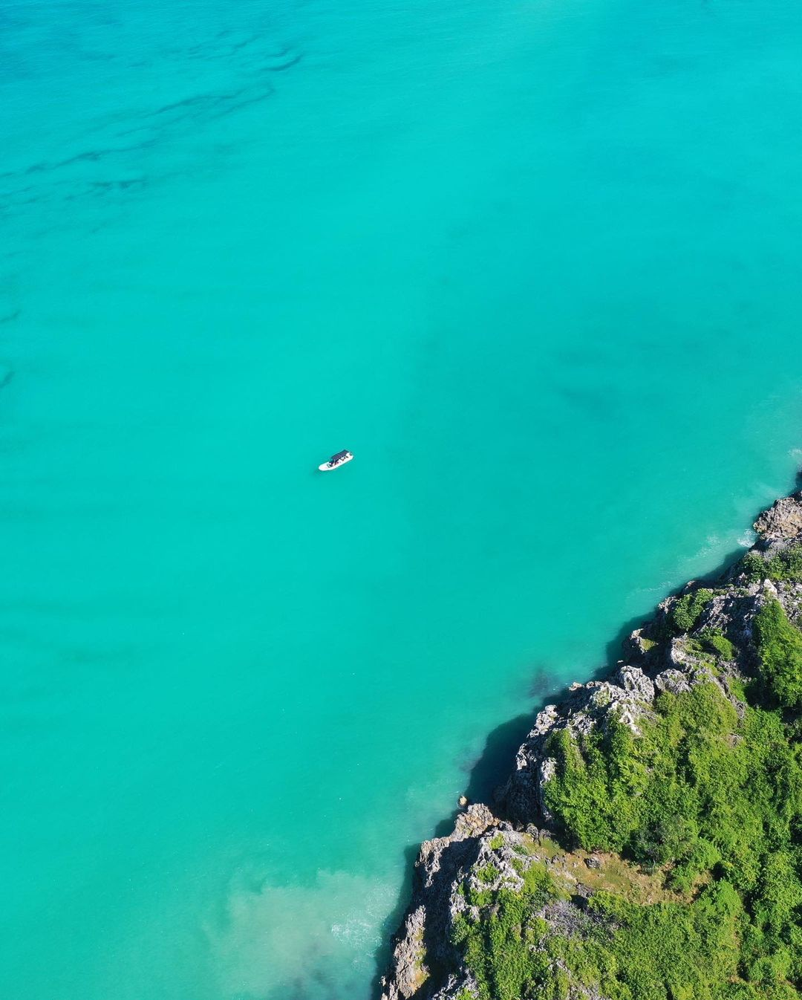

Somos la empresa de turismo nuemero 1 en venezuela, solo haciendote conocer un destino, destino que se divide en mil lugares para conocer y nunca olvidar.
Bienvenido a Morrocoy
El Parque Nacional Morrocoy es una isla protegida y una reserva marina en la costa caribeña de Venezuela. Se encuentra en el estado Falcón y es conocida por sus manglares, sus playas y sus cayos, como el Cayo Sombrero. En sus claras aguas pueden observarse arrecifes de coral, tortugas marinas y delfines. Los pantanos del Refugio de Fauna Silvestre de Cuare albergan una amplia variedad de aves, como garzas rojas y flamencos.



